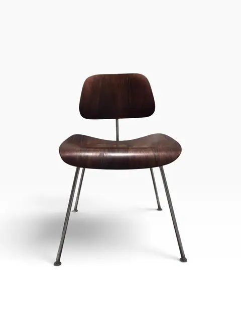
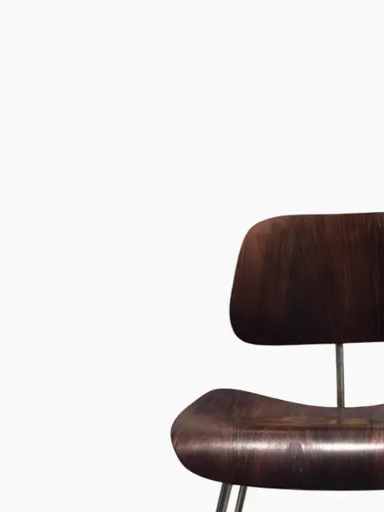
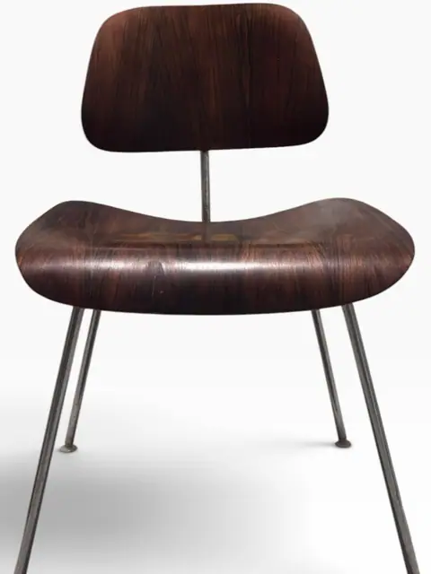
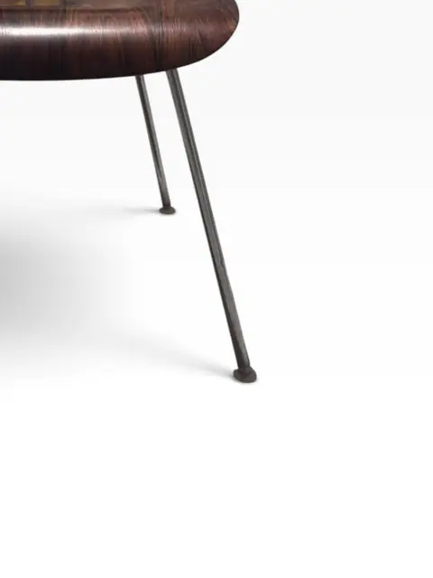
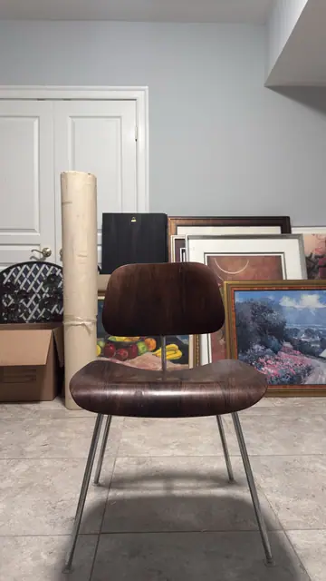
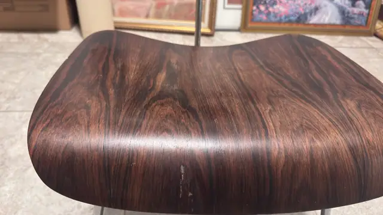
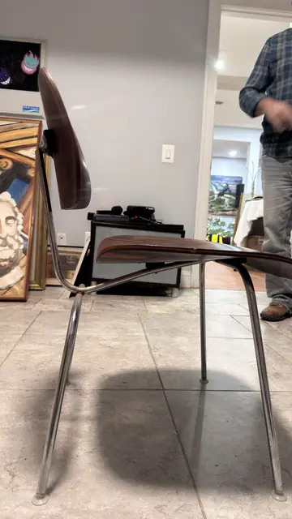
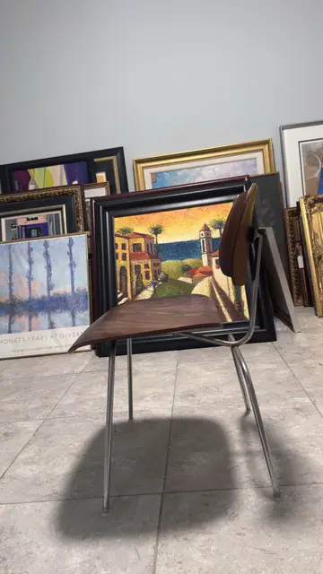
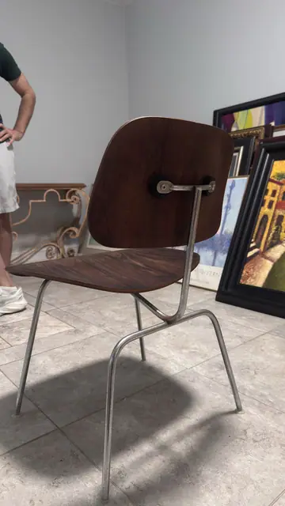

Handmade Objects
Molded Rosewood Plywood Lounge Chair in the Style of Charles and Ray Eames (Model LCM)
· 20th century
Price Upon Request









About the Item
A molded-plywood lounge chair in dark rosewood-stained veneer on a black enameled steel rod base, in the style of Charles and Ray Eames' 1946 Model LCM (Lounge Chair Metal) for Herman Miller. The two-piece shell is joined by the characteristic central spine with rubber shock mounts. A design icon of the post-war molded-plywood revolution. Form is faithful to the Eames LCM (Herman Miller issued it in rosewood), but no Herman Miller label is visible in photos — kept as 'in the style of'. Check underside for labels before upgrading attribution.
Details
- Creation Year:
- 20th century
- Medium:
- Molded plywood and enameled steel
- Period:
- 20Th
- Condition:
- Offered in the condition shown in the photographs.
- Reference Number:
- VO-357